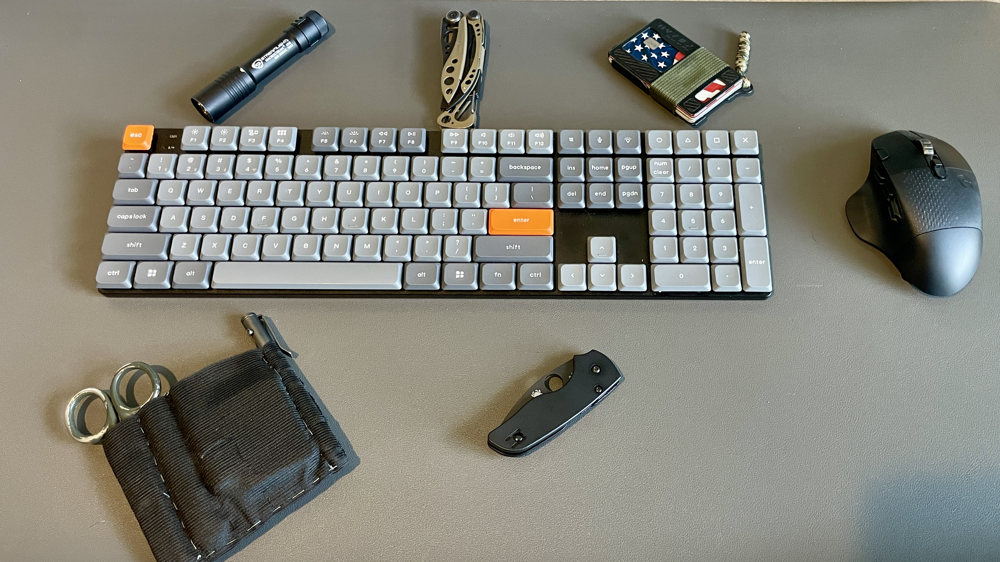
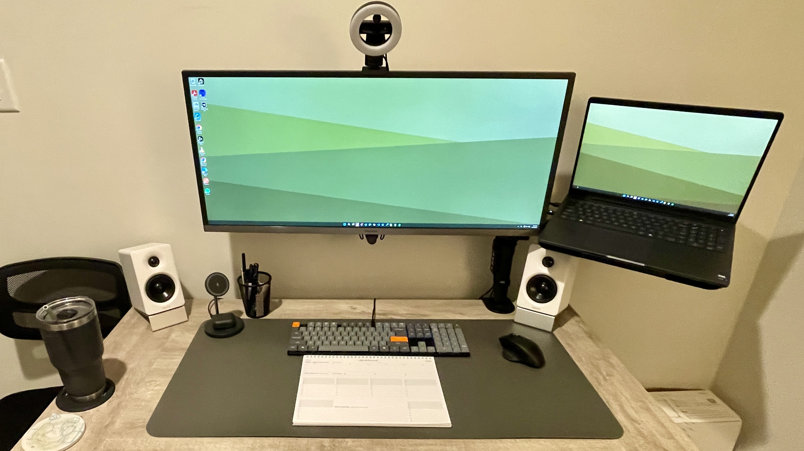

First Impressions
I'll be honest — I didn't expect the Keychron K5 Max to earn a permanent spot on my desk. I've used enough keyboards at this point to know what I like, and low-profile boards usually don't make the cut. But this one surprised me right out of the box.
The first thing I noticed was just how slim it is. Not "mechanical keyboard slim," but actually slim. It almost feels like a laptop keyboard at first glance, but once I started typing, it was clear this wasn't just another flat board pretending to be something more.
Build & Design
Keychron kept things simple here, and I think that's the right call. I've got the full-size layout, which means I'm getting a numpad without sacrificing desk usability. That's usually where things go wrong, but the low-profile design keeps it from feeling oversized.
It's got a mix of aluminum and plastic, and while it's not a tank like some of the heavier boards out there, I don't feel like I'm missing anything. It feels solid where it needs to.
What I appreciate most is that it doesn't scream for attention. It fits just as well in a work setup as it does in a more dialed-in desk build.

Why I Switched From the Keychron K4v2
Before this, I was running the Keychron K4v2, and on paper, it checks a lot of the same boxes. 96% layout, compact footprint, still gives you a numpad. It's a solid board. No real complaints.
But over time, I started noticing something small that turned into a consistent annoyance — that tighter layout. With the K4v2, everything is just a little more compressed, and for me that meant every once in a while I'd overshoot with my right hand and hit the wrong key, especially when I was moving fast. Not a dealbreaker, but enough to break rhythm.
Switching to the full-size layout on the K5 Max gave me just a bit more breathing room on that right side, and that's made a bigger difference than I expected. I'm making fewer mistakes, correcting less, and everything just feels more natural when I'm in the flow. It's one of those things you don't notice until it's gone.
Also, I've got a buddy at work who loves to give me a hard time for "needing" a full-size keyboard. But honestly, I'm just optimizing my hardware so I can keep up with his efficiency. That's my story and I'm sticking to it.
Typing Experience
This is where the K5 Max really won me over. I went with the Gateron Brown switches, and the best way I can describe it is simple: it's creamy. Not overly loud, not scratchy, just smooth and controlled. It's got enough tactile feedback to feel intentional without getting in the way when I'm moving fast.
And compared to my K4v2 with Gateron Reds, this is a noticeable shift. The Reds felt good, but they were louder than I realized at the time — loud enough that when my wife and I were sharing a small office, my typing was getting picked up on her work calls. That's one of those real-world things nobody talks about until it's a problem.
Both boards are great to type on, no question. But if you're in a shared space, switch choice matters more than you think. Now that my office has moved, it's less of an issue — but even with that change, I still prefer the feel of the K5 Max. It's just… better. Like butta.

Connectivity & Daily Use
This is where the K5 Max really pulls ahead. I've been bouncing between devices pretty regularly, and having 2.4GHz wireless, Bluetooth for multiple devices, and wired USB-C makes a bigger difference than I expected.
The 2.4GHz connection is fast enough that I don't think about it. No lag, no hiccups, no frustration. It just works, and that's exactly what I want from something I use every day.
The K5 Max pairs well with my Edifier M60 speakers to create a complete desk setup that balances function and aesthetics.
Customization
I didn't think I needed customization… until I had it. With QMK and VIA support, I've been able to tweak this board to fit how I actually work instead of adapting to a stock layout. Small changes, macros, remaps — it all adds up. If you're someone who likes dialing things in, this is where the K5 Max really starts to separate itself.
Battery Life
No complaints here. I'm not running full RGB all the time, so I'm getting solid use out of it without constantly thinking about charging. And when I do need to plug in, USB-C keeps it simple. It's not something I've had to manage, which is exactly how it should be.
Who It's For
- Want full-size without desk takeover
- Long writing or work sessions
- Multi-device flexibility
- Shared office or noise-conscious environments
- Enough customization to make it yours
Who It's Not For
- Chasing deep thock-heavy sound profile
- Want a heavy, all-metal board
- Deep into fully custom builds
Pros
- Genuinely slim without feeling cheap
- Gateron Browns are smooth and quiet enough for shared spaces
- Full-size layout eliminates right-hand miskeys
- 2.4GHz wireless is lag-free
- Multi-device Bluetooth switching works well
- QMK / VIA support for real customization
- Fits work and desk build aesthetics equally
Cons
- Not for thock seekers or heavy board enthusiasts
- Full-size footprint isn't for everyone
- Customizers may want something more tailored
I didn't expect this to stick, but it has. The Keychron K5 Max isn't trying to be the flashiest keyboard out there. It's trying to be something you can actually use every day without thinking about it. And for me, that's exactly why it's stayed on my desk. It's efficient, comfortable, and just works. Combined with clean desk audio and proper peripherals, it creates a workspace that gets out of the way and lets you focus. At the end of the day… it's like butta.